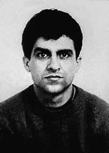

Aderval
Alves
Coqueiro
CIRCUNSTÂNCIAS DA MORTE
Aderval Alves Coqueiro morreu no dia 6 de fevereiro de 1971, Rio de Janeiro, em ação praticada por agentes do DOI-CODI do I Exército. De acordo com a versão divulgada, Aderval teria sido morto em confronto armado com agentes das forças de segurança. Nesse sentido, a edição do Jornal do Brasil, de 8 de fevereiro de 1971, informava que Aderval teria resistido à prisão, sendo morto em consequência de um tiroteio.
As investigações realizadas sobre o caso reúnem indícios que demonstram a falsidade dessa versão. Banido do Brasil em junho de 1970, Aderval regressou clandestinamente ao país no dia 31 de janeiro de 1971, quando foi morar em um apartamento no Cosme Velho, bairro do Rio de Janeiro. A volta desse militante foi organizada por integrantes da organização Vanguarda Armada Revolucionária Palmares (VAR-Palmares), responsáveis pela articulação de um esquema que permitia o regresso dos banidos ao Brasil. Seu retorno foi objeto de investigações por parte dos órgãos de segurança, com intuito de identificar e desmantelar as redes que articulavam esse regresso.
A ação policial articulada para a captura de Aderval montou um bloqueio em torno do apartamento onde morava. Segundo a vizinhança, uma grande área do bairro foi cercada por agentes estatais com o objetivo de evitar a fuga do militante. No momento em que invadiram o apartamento, os agentes do DOI-CODI/I começaram a atirar e Aderval foi abatido pelas costas no pátio interno do prédio. O zelador do prédio, Francisco Soares, afirmou ter visto uma centena de policiais civis e do Exército cercarem o prédio, que foi, em seguida, “invadido por vários homens armados, e foram direto para o apartamento 202. Nesse momento, um oficial mandou que eu sair da janela, posteriormente escutei um militar gritar ‘atira e mata’, logo depois escutei uma grande gritaria nos fundos do prédio e vários disparos de armas, que durou somente alguns segundos. Escutei uma pessoa falar ‘temos presunto fresco’. (…) Observei varias marcas de tiros, não sei dizer quantas, estando ele somente de calção, sem camisa e desarmado. Também ouvi o policial dizer ‘bota a arma do lado dele’ (…)”.
O memorando n° 268/7, de 10 de fevereiro de 1971 com o assunto “Diligência do 1° Exército”, remetido pelo delegado do DOPS, Nelson Hatem, para o Diretor da Divisão de Informação informa que o comissário do DOPS responsável pelo plantão do dia 6 para 7 de fevereiro de 1971 era Maurício da Silva Lintz. O comissário registrou que durante seu plantão elementos do I Exército compareceram à delegacia e comunicaram que uma diligência realizada na Rua Cosme Velho, n° 1061, tinha resultado na morte de um indivíduo não identificado. Ainda segundo seu relato, o comissário informa ter feitio o deslocamento do corpo ao IML para a identificação datiloscópica e fotográfica, tendo depois tomado conhecimento que o corpo era de Aderval Alves Coqueiro. O documento ainda informava a presença no local da ocorrência de uma senhora, Albertina Moreira Siqueira, proprietária do apartamento onde fora encontrado Aderval e que teria sido levada ao I Exército e posteriormente encaminhada ao Hospital Souza Aguiar. Nas fichas localizadas no acervo do Arquivo Público do Rio de Janeiro, apesar de constar a identificação de Aderval, havia a inscrição “cadáver de um desconhecido”. Dessa maneira pode-se concluir que a ação que culminou na execução de Aderval foi realizada pelo DOI-CODI-I com apoio do DOPS-RJ.
No processo sobre o caso na Comissão Especial sobre Mortos e Desaparecidos Políticos (CEMDP), o relator Luís Francisco Carvalho Filho solicitou ao Instituto Médico Legal (IML-RJ) o laudo necroscópico de Aderval, recebendo apenas uma certidão confirmando a data do óbito e informando que a morte ocorreu “[…] em consequência de crime, sendo a causa mortis ferida transfixante do tórax – lesão do pulmão direito”, não permitindo determinar quantos tiros acertaram o corpo de Aderval. No entanto, as fotos do corpo de Aderval que constam no processo da CEMDP mostram várias perfurações, sendo visíveis também as marcas de sangue no chão que indicam que o corpo foi arrastado até o local, corroborando o depoimento do zelador do prédio, o senhor Francisco Soares, sobre a montagem da cena do local da morte. Neste sentido, aduziu o Relatório solicitado pela CEMDP: “A eliminação sumária dos chamados terroristas fazia parte da estratégia dos órgãos da repressão. […] As fotos obtidas junto à Agência JB indicam, com absoluta clareza, que a vítima não foi abatida no local em que se encontrava o corpo. O cadáver foi arrastado para lá. As manchas de sangue no piso são visíveis e indicam o movimento. O revólver, portanto, também não poderia se encontrar naquela posição, na mão direita. As fotos indicam, ainda, que o cadáver de Coqueiro apresentava outras lesões, além das feridas transfixantes do tórax e abdômen, mencionados na certidão de óbito e, em parte, no documento encaminhado pelo IML: Há nítidos sinais de ferimentos na cabeça, na nádega esquerda e na perna direita. Há uma situação de cerco e uma morte não esclarecida”.
Fica evidente, portanto, a falsidade da versão de tiroteio divulgada. Aderval foi o primeiro banido a ser morto pela repressão após seu retorno ao Brasil. Sua morte foi mencionada, dentro desse contexto, na Informação n° 114/16 da Agência do SNI do Rio de Janeiro, de 15 de setembro de 1972, que registrava que alguns banidos tinham retornado ao Brasil após treinamento em países comunistas, “tendo ocorrido inclusive mortes ao se defrontarem com a repressão, a exemplo do que aconteceu com ADERVAL ALVES COQUEIRO e CARLOS EDUARDO PIRES FLEURY, após retornarem da Argélia”. O mesmo documento afirmava que, em razão da “eficiência dos Órgãos de Segurança”, outros exilados e banidos estariam “desestimulados em retornar, não desejando ter o mesmo fim de seus camaradas mortos”.
O corpo de Aderval Alves Coqueiro foi sepultado pelos familiares no Cemitério de Inhaúma, no Rio de Janeiro, no dia 14 de fevereiro de 1971.
Aderval Alves Coqueiro died on February 6, 1971, Rio de Janeiro, in an action carried out by DOI-CODI agents of the 1st Army. According to the published version, Aderval was killed in an armed confrontation with security force agents. In this sense, the edition of Jornal do Brasil, dated February 8, 1971, reported that Aderval had resisted arrest, being killed as a result of a shootout.
The investigations carried out into the case bring together evidence that demonstrates the falsity of this version. Banned from Brazil in June 1970, Aderval returned clandestinely to the country on January 31, 1971, when he went to live in an apartment in Cosme Velho, a neighborhood in Rio de Janeiro. The return of this militant was organized by members of the organization Vanguarda Armada Revolucionária Palmares (VAR-Palmares), responsible for organizing a scheme that allowed the return of those banned to Brazil. His return was the subject of investigations by security agencies, with the aim of identifying and dismantling the networks that articulated his return.
The police action organized to capture Aderval set up a blockade around the apartment where he lived. According to the neighborhood, a large area of the neighborhood was surrounded by state agents with the aim of preventing the militant from escaping. The moment they invaded the apartment, DOI-CODI/I agents began shooting and Aderval was shot in the back in the building's inner courtyard. The building's caretaker, Francisco Soares, stated that he saw a hundred civil and Army police officers surround the building, which was then "invaded by several armed men, and they went straight to apartment 202. At that moment, an officer ordered me to get out of the window, later I heard a soldier shout 'shoot and kill', shortly afterwards I heard a big shout at the back of the building and several gunshots, which lasted only a few seconds. I heard someone say 'we have fresh ham’. (…) I observed several gunshot marks, I can’t say how many, he was only wearing shorts, shirtless and unarmed.
Memorandum No. 268/7, dated February 10, 1971 with the subject “Diligence of the 1st Army”, sent by the DOPS delegate, Nelson Hatem, to the Director of the Information Division informs that the DOPS commissioner responsible for the duty from the 6th to the 7th of February 1971 was Maurício da Silva Lintz. The commissioner recorded that during his shift, members of the 1st Army attended the police station and reported that an investigation carried out at Rua Cosme Velho, no. 1061, had resulted in the death of an unidentified individual. Still according to his report, the commissioner reports that he had moved the body to the IML for fingerprint and photographic identification, having later learned that the body was that of Aderval Alves Coqueiro. The document also reported the presence at the scene of the incident of a lady, Albertina Moreira Siqueira, owner of the apartment where Aderval was found and who had been taken to the 1st Army and later sent to Souza Aguiar Hospital. In the files located in the Rio de Janeiro Public Archives collection, despite Aderval's identification appearing, there was the inscription “corpse of an unknown person”. In this way, it can be concluded that the action that culminated in Aderval's execution was carried out by DOI-CODI-I with support from DOPS-RJ.
In the process of the case at the Special Commission on Political Deaths and Disappearances (CEMDP), the rapporteur Luís Francisco Carvalho Filho requested the Legal Medical Institute (IML-RJ) for the necroscopic report on Aderval, receiving only a certificate confirming the date of death and stating that the death occurred “[…] as a result of a crime, the cause of death being a transfixing wound to the chest – injury to the right lung”, not allowing to determine how many shots hit the body by Aderval. However, the photos of Aderval's body that appear in the CEMDP process show several perforations, and the blood marks on the floor are also visible, indicating that the body was dragged to the location, corroborating the testimony of the building's caretaker, Mr. Francisco Soares, about the staging of the death scene. In this sense, the Report requested by CEMDP added: "The summary elimination of the so-called terrorists was part of the strategy of the repression bodies. [...] The photos obtained from Agência JB indicate, with absolute clarity, that the victim was not shot in the place where the body was located. The corpse was dragged there. The blood stains on the floor are visible and indicate movement. The revolver, therefore, could not be found in that position, in the right hand. The photos also indicate that Coqueiro's corpse had other injuries, in addition to the transfixing wounds to the chest and abdomen, mentioned in the death certificate and, in part, in the document sent by the IML: There are clear signs of injuries to the head, left buttock and right leg.
Therefore, the falsity of the version of the shooting published is evident. Aderval was the first banished person to be killed by repression after his return to Brazil. His death was mentioned, within this context, in Information No. 114/16 from the SNI Agency in Rio de Janeiro, dated September 15, 1972, which recorded that some banished people had returned to Brazil after training in communist countries, “even deaths having occurred when faced with repression, such as what happened to ADERVAL ALVES COQUEIRO and CARLOS EDUARDO PIRES FLEURY, after returning from Algeria”. The same document stated that, due to the “efficiency of the Security Organs”, other exiles and banished people would be “discouraged from returning, not wanting to have the same end as their dead comrades”.
The body of Aderval Alves Coqueiro was buried by his family at the Inhaúma Cemetery, in Rio de Janeiro, on February 14, 1971.
Aderval Alves Coqueiro murió el 6 de febrero de 1971, Río de Janeiro, en una acción realizada por agentes del DOI-CODI del 1.º Ejército. Según la versión publicada, Aderval murió en un enfrentamiento armado con agentes de las fuerzas de seguridad. En este sentido, la edición del Jornal do Brasil, del 8 de febrero de 1971, informó que Aderval se había resistido al arresto, siendo asesinado como consecuencia de un tiroteo.
Las investigaciones realizadas sobre el caso reúnen pruebas que demuestran la falsedad de esta versión. Expulsado de Brasil en junio de 1970, Aderval regresó clandestinamente al país el 31 de enero de 1971, cuando se fue a vivir a un departamento en Cosme Velho, un barrio de Río de Janeiro. El regreso de este militante fue organizado por miembros de la organización Vanguarda Armada Revolucionária Palmares (VAR-Palmares), encargada de organizar un esquema que permitió el regreso de los prohibidos a Brasil. Su regreso fue objeto de investigaciones por parte de organismos de seguridad, con el objetivo de identificar y desmantelar las redes que articularon su regreso.
La acción policial organizada para capturar a Aderval estableció un bloqueo en los alrededores del departamento donde vivía. Según el barrio, una gran zona del barrio fue rodeada por agentes estatales con el objetivo de impedir que el militante escapara. En el momento en que invadieron el apartamento, agentes del DOI-CODI/I comenzaron a disparar y Aderval recibió un disparo por la espalda en el patio interior del edificio. El conserje del edificio, Francisco Soares, afirmó que vio a un centenar de policías civiles y del Ejército rodear el edificio, que luego fue "invadido por varios hombres armados, y se dirigieron directamente al departamento 202. En ese momento, un oficial me ordenó salir por la ventana, luego escuché a un soldado gritar 'disparen y maten', poco después escuché un gran grito en la parte trasera del edificio y varios disparos, que duraron sólo unos segundos. Escuché a alguien decir 'tenemos jamón fresco'. (…) Observé varias marcas de disparos, no puedo decir cuántas, solo vestía short, sin camisa y desarmado.
Memorándum nº 268/7, de 10 de febrero de 1971 con el asunto “Diligencia del 1º Ejército”, enviado por el delegado del DOPS, Nelson Hatem, al Director de la División de Información informa que el comisionado del DOPS responsable por la actuación del 6 al 7 de febrero de 1971 fue Maurício da Silva Lintz. El comisario registró que durante su turno, miembros del 1º Ejército acudieron a la comisaría e informó que una investigación realizada en la Rua Cosme Velho, no. 1061, había resultado en la muerte de una persona no identificada. Aún según su informe, el comisario informa que trasladó el cadáver al IML para su identificación dactilar y fotográfica, sabiendo posteriormente que se trataba de Aderval Alves Coqueiro. El documento también informó la presencia en el lugar del incidente de una señora, Albertina Moreira Siqueira, propietaria del apartamento donde fue encontrado Aderval y que había sido trasladada al 1.º Ejército y luego enviada al Hospital Souza Aguiar. En los archivos ubicados en el acervo del Archivo Público de Río de Janeiro, a pesar de que aparecía la identificación de Aderval, estaba la inscripción “cadáver de persona desconocida”. De esta manera, se puede concluir que la acción que culminó con la ejecución de Aderval fue realizada por el DOI-CODI-I con el apoyo del DOPS-RJ.
En el trámite del caso en la Comisión Especial de Muertes y Desapariciones Políticas (CEMDP), el relator Luís Francisco Carvalho Filho solicitó al Instituto Médico Legal (IML-RJ) el informe necroscópico de Aderval, recibiendo sólo un certificado que confirma la fecha de la muerte y afirma que la muerte ocurrió “[…] como resultado de un delito, siendo la causa de la muerte una herida transfixiante en el tórax – lesión en el pulmón derecho”, no permitiendo determinar cuántos disparos alcanzaron. cuerpo de Aderval. Sin embargo, las fotografías del cuerpo de Aderval que aparecen en el proceso del CEMDP muestran varias perforaciones, y también son visibles las marcas de sangre en el piso, lo que indica que el cuerpo fue arrastrado hasta el lugar, corroborando el testimonio del cuidador del edificio, señor Francisco Soares, sobre la escenificación de la escena de la muerte. En este sentido, el Informe solicitado por el CEMDP agrega: "La eliminación sumaria de los llamados terroristas era parte de la estrategia de los órganos de represión. [...] Las fotos obtenidas de Agência JB indican, con absoluta claridad, que la víctima no fue baleada en el lugar donde se encontraba el cuerpo. El cadáver fue arrastrado hasta allí. Las manchas de sangre en el suelo son visibles e indican movimiento. El revólver, por lo tanto, no pudo ser encontrado en esa posición, en la mano derecha. Las fotos también indican que el cadáver de Coqueiro tenía otras lesiones, además de las heridas transfixiantes en tórax y abdomen, mencionadas en el certificado de defunción y, en parte, en el documento enviado por el IML: Hay signos claros de lesiones en la cabeza, nalga izquierda y pierna derecha.
Por tanto, la falsedad de la versión publicada del tiroteo es evidente. Aderval fue el primer desterrado asesinado por la represión tras su regreso a Brasil. Su muerte fue mencionada, en este contexto, en la Información nº 114/16 de la Agencia SNI de Río de Janeiro, de 15 de septiembre de 1972, que registraba que algunos desterrados habían regresado a Brasil después de formarse en países comunistas, “incluso habiéndose producido muertes ante la represión, como la de ADERVAL ALVES COQUEIRO y CARLOS EDUARDO PIRES FLEURY, después de regresar de Argelia”. El mismo documento afirmaba que, debido a la “eficacia de los órganos de seguridad”, otros exiliados y desterrados serían “disuadidos de regresar, al no querer tener el mismo fin que sus compañeros muertos”.
El cuerpo de Aderval Alves Coqueiro fue enterrado por su familia en el Cementerio de Inhaúma, en Río de Janeiro, el 14 de febrero de 1971.